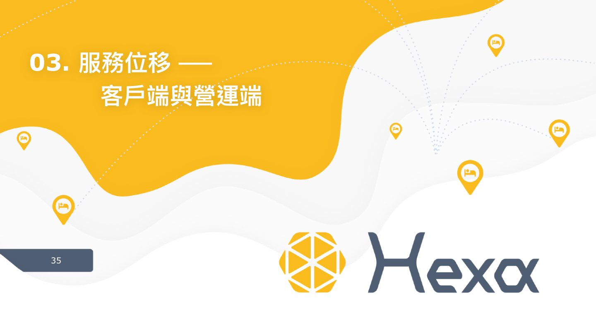
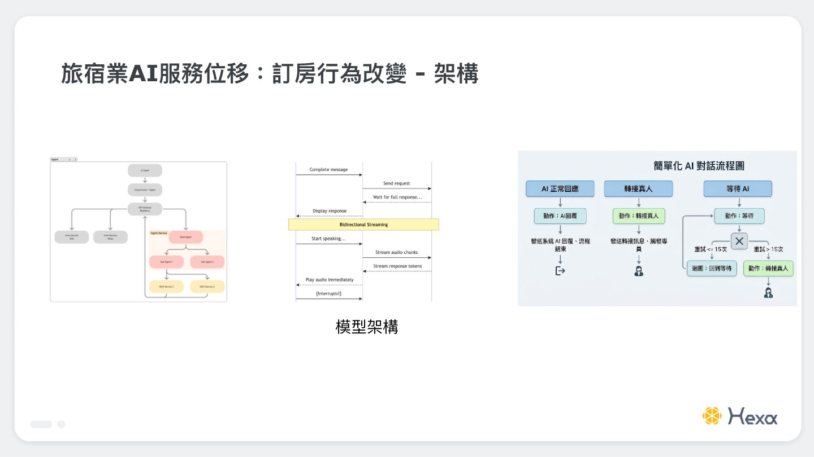
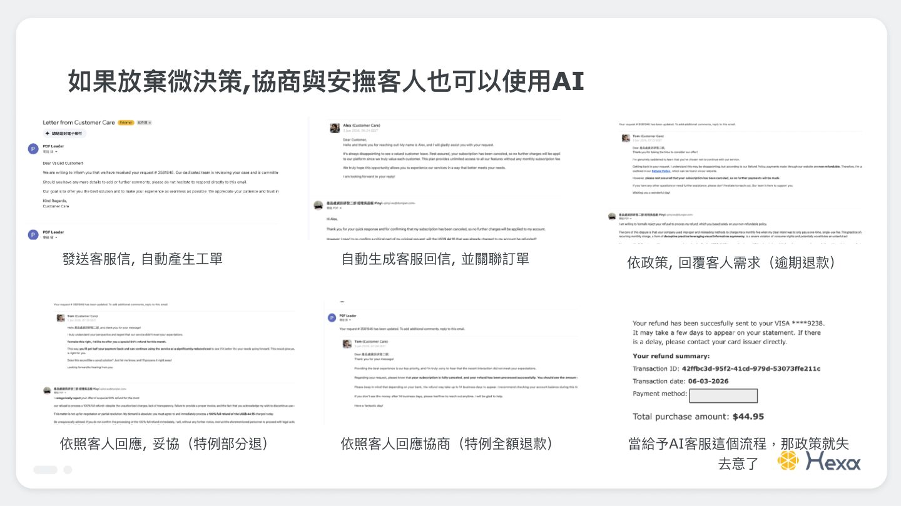
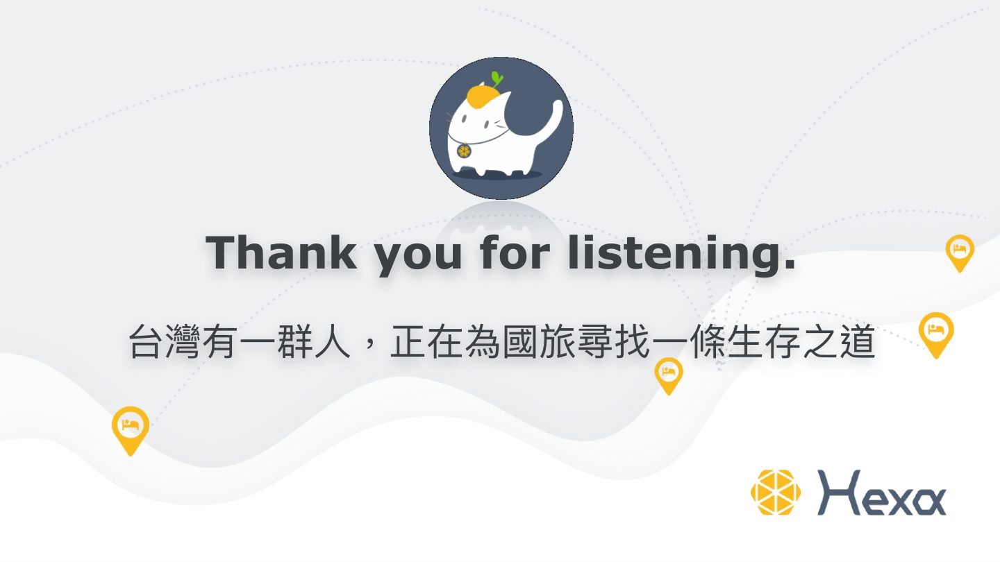

摘要
本演講深入分析台灣旅宿業面臨的嚴重缺口（常態性缺工 5000-6600 人、OTA 高達 15-25% 佣金抽成、假日滿平日空且數據主權受制於國際平台）等三層困境，並探討 AI 如何作為營運賦能工具協助產業突圍。以「Hexa 旅宿通路管理系統」為實踐例，展示 AI 在客戶端與營運端之「服務位移」架構：客戶端採用 AI 助理處理常態客服，輔以「人工監控面板（Human-in-the-loop）」供訂房中心適時介入微決策；營運端則導入 AI 掃房結果自動影像辨識、動態房務清潔任務調度，以及自助證件辨識防弊系統。演講強調，企業導入 AI 應採「先輔助再取代」原則，利用中介層設計克服 PCI-DSS 與個資法限制，並部署 AI 級別資安防護以應對自動化滲透及 Prompt Injection 等新型威脅。
重點整理
- 台灣旅館住用率連續 3 年成長至 53.11%，但平均房價漲幅遠低於基本工資與人事成本漲幅，利潤空間持續被壓縮
- OTA 佔訂單比重達 88.9%，佣金率 15-25%，推估全台每年支付 OTA 佣金約 390 億元
- AI 導入四大阻礙：ROI 回收期 6-18 個月、78% 業者面臨系統整合困難、56.1% 企業缺 AI 人才、平均導入成本 209 萬元
- AI 已用於訂房客服（監控 Agent 對話並適時人工介入）、房務任務分派與清潔審核、旅客證件辨識與異常商業行為監控
- 台灣已成資安攻擊熱區（每週平均 3,840 次攻擊，亞太第一），2025-2026 年多起旅宿業資安事件（圓山大飯店、Booking 資安事件等）顯示 AI 賦能同時放大攻擊面
重點圖片／架構圖




台灣旅宿業的現狀與利潤消失悖論
根據交通部觀光署統計，113-115 年第 1 季住用率連續 3 年成長至 53.11%，全台旅館平均房價約 3,101 元，但常態性缺工達 5,000-6,600 人，餐飲飯店業求才職缺高達 24.1 萬個。講者指出產業存在「利潤消失悖論」：2024 年旅館業總營收僅成長 0.47%，但基本工資 3 年累計調漲 13.23%、OTA 佣金率 15-25%，且住房率呈現「假日滿平日空」的分布不均（週六 20.2% vs 週一 10.9%），受限於品牌形象與 OTA 價格平價條款，業者難以透過降價彈性調整，導致營收成長遠低於成本上升速度。
AI 導入為何卡在 PoC 階段
演講歸納四大 AI 導入阻礙：一是看不見的 ROI，回收期普遍需 6-18 個月，業者擔心投資打水漂；二是資料散落各處，訂單在 PMS、價格在 OTA、客戶資料在 Excel，加上 PCI-DSS 與個資法限制，78% 業者面臨系統整合困難；三是組織文化尚未準備好，56.1% 企業缺乏 AI 人才，老闆習慣用直覺決策；四是技術門檻與成本，2024 年已導入企業平均投入 209 萬元。產業因應之道包括從最痛的點切入、階段性資料整合、先輔助後取代，以及採用「有成效才收費」的 SaaS 新興模式（如佣金僅 3% 的案例）降低導入門檻。
服務位移：客戶端與營運端的 AI 實例
在客戶端，訂房中心從一對一服務轉為由 AI 對話分析並提出介入建議，人員可在需要時手動接手，讓服務位移到協商與安撫客人等更高價值的「微決策」；但講者也提醒若把協商政策完全交給 AI，反而可能讓既定政策失去意義，因此需明確限制邊界與目標，而非盲目全面 AI 化。在營運端，房務管理透過 AI 依退房與進單狀況自動配置掃房任務、辨識掃房結果並審核清潔狀態，減輕管理者重複工作，讓管理者能專注於建立標準；此外也導入證件辨識與商業行為監控，從數據中找出未知異常並發出警示，強化防弊機制。
數據賦能：從數據孤島到決策體系重塑
講者指出台灣旅宿業面臨三重數據困境：一是資料散落於 OTA、PMS 與 Excel 形成的數據孤島，且受 PCI-DSS、ISO 27001 等法規最小化傳輸原則限制而難以打通；二是核心數據的「地緣失權」，旅客搜尋行為與定價訊號多掌握在 Booking.com、Expedia 等國際 OTA 集團手中；三是人才與文化雙重斷層，既缺乏同時懂旅宿與數據分析的複合型人才，管理層也習慣依賴經驗決策。現階段 AI 已能協助數據異常監控、以 Agent 過濾並判斷信件優先順序、以及透過大數據監控演唱會、賽事等活動提前預測住宿需求高峰，動態定價可每日執行數百次價格優化，37% 旅客也已使用 AI 規劃行程。
資安威脅：AI 時代的隱形戰場
講者引用資料指出台灣已成資安攻擊熱區，每週平均遭受 3,840 次攻擊居亞太第一，2025 年 2 月勒索軟體攻擊更暴增 87%。旅宿業因掌握大量護照、信用卡等高價值個資，加上 PMS、OTA、支付閘道等多系統拼接架構防護困難，且資安投資相對不足（7 成飯店未妥善管理電子郵件安全），逐漸成為攻擊目標，2025-2026 年間已發生圓山大飯店系統遭駭、Booking 資安事件、76 萬台灣旅客個資外洩等多起重大事件。AI 賦能是雙面刃：一方面擴大攻擊面（如 Prompt Injection、AI 生成釣魚郵件、深偽技術冒充高層），另一方面業者也開始導入 AI 資安服務以對抗 AI 化的攻擊手法。